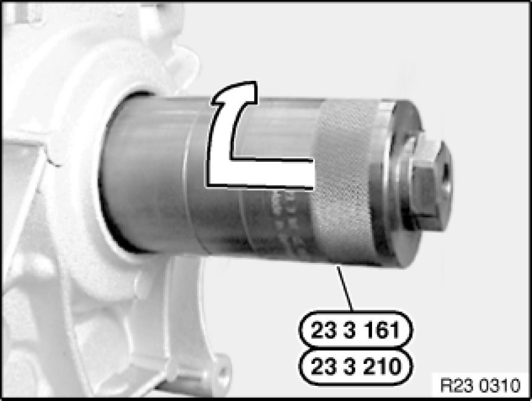

Replacing Radial Shaft Seal for Output Shaft (GS6-37BZ/DZ H-Transmission)
23 12 050 - Replacing radial shaft seal for output flange (GS6-37BZ / DZ H-transmission)

Special tools required:
- 23 0 020 23 0 020 Holder
- 23 2 320 23 2 320 Socket for Socket Wrench WAF 36
- 23 3 161 23 3 160 Set of Tools
- 23 3 162 23 3 160 Set of Tools
- 33 1 150 33 1 150 Fixture

Important!
After completion of work, check transmission oil level Procedures.
Use only approved transmission oil.
Failure to comply with this instruction will result in serious damage to the transmission.

Necessary preliminary tasks:
- Remove exhaust system
- Support transmission Removing and Installing Transmission (GS6-37BZ N52K).
- Remove transmission cross-member Removing and Installing Transmission (GS6-37BZ N52K)
- Remove transmission bearing block Removing and Installing Transmission (GS6-37BZ N52K)
- Unflange propeller shaft from transmission and tie up to one side
Brace output flange with special tool 23 0 020 23 0 020 Holder.
Release collar nut with special tool 23 2 320 23 2 320 Socket for Socket Wrench WAF 36.
Installation Note:
Mark flange with thermo pin and heat to min. 100 °C.
Warning!
Scalding hazard! Fit flange wearing suitable protective gloves only!
Important!
Do not drive on flange.
Secure collar nut with Loctite 243.
- Loctite 243: BMW Parts Service.
- Tightening torque:23 21 1AZ Transmission Shafts.
Detach output flange with special tool 33 1 150 33 1 150 Fixture from output shaft.

Release screw on special tool 23 3 161 23 3 160 Set of Tools.
Push special tool over output shaft and screw firmly into sealing ring.
Insert screw into special tool again and continue turning until sealing ring is pulled out of transmission housing.
If necessary, remove Woodruff key of sealing ring.
Installation Note:
Coat sealing lips of new radial seal with gear oil.
Drive in radial seal as far as it will go with special tool 23 3 162 23 3 160 Set of Tools and plastic hammer.